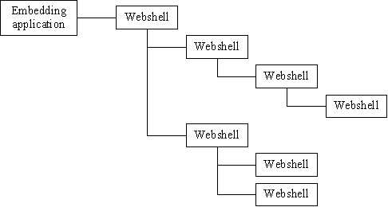
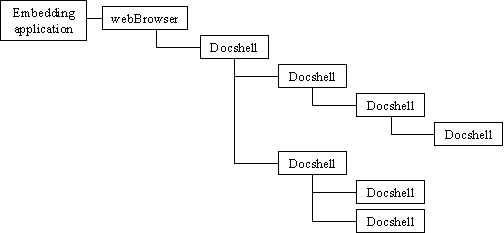
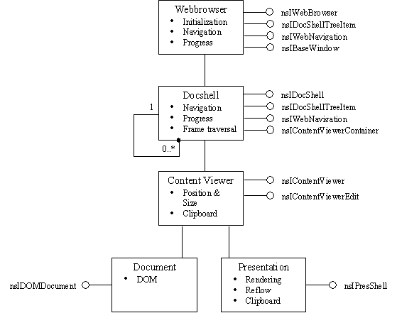
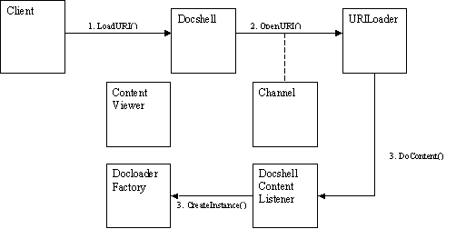
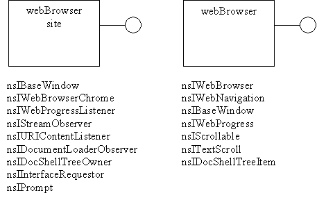

1.Table of Contents
1.2 Principal embedding objects
2.2 Interface: nsIContentViewerContainer
2.4 Interface: nsIDocShellTreeItem
2.5 Interface: nsIDocShellTreeNode
2.6 Interface: nsIDocShellTreeOwner
2.7 Interface: nsIInterfaceRequestor
2.10 Interface: nsIScriptGlobalObjectOwner
2.12 Interface: nsIStreamObserver
2.15 Interface: nsIWebBrowserChrome
2.16 Interface: nsIWebNavigation
2.17 Interface: nsIWebProgress
2.18 Interface: nsIWebProgressListener
3 Developing third party applications using the embedding interfaces
3.1.1 Header files and libraries
3.1.4 Creating the WebBrowser object
3.1.5 Getting the root docshell
3.1.9 Receiving context menu notifications
2.Introduction
This document describes the programmable interface for embedding Gecko into third party applications.
It discusses the webbrowser and docshell objects and the interfaces that must be used control them.
Terms such as XPCOM, CID, interface and IDL are sprinkled liberally throughout. If you are unfamiliar with XPCOM then read through http://www.mozilla.org/projects/xpcom/ to get an idea with what the terms mean. Windows programmers familiar with COM/ActiveX should be understand XPCOM because the two are closely related.
Italics are used to represent draft notes.
1.1 Overview
When you start Mozilla, a browser window appears. This is made up of frames representing the chrome, content, side panel, buttons and so on. Frames are nested inside other frames to form a hierarchy. The root frame represents the browser window with sub-frames managing each discrete component. Each frame is associated with a document which is it's content.
Content is trusted or untrusted. Trusted content is known as chrome, usually loaded from local store with greater privileges to interact with the host machine. Usually the topmost frames are chrome and contain a content sub-frames.
Until recently the object responsible for managing a frame and the associated document was called the webshell. The topmost webshell was controlled by the host application and each child was managed in turn by its parent webshell.

Figure 1: How it used to be done
The webshell had methods for child and parent webshell traversal. It also had methods for sizing and positioning, loading and refreshing documents, back and forward navigation, chrome, registering progress callbacks, setting preferences and much more besides. As you can imagine, webshell became very complicated and bloated. Even worse, all the exposed methods were defined on a single interface! The nsIWebShell interface had over 30 methods and properties and it was practically impossible to make it immutable because it kept changing so much. It was clear that Mozilla would be much better if webshell could be rewritten.
Take a look here to see how many methods were added to nsIWebShell between during its lifetime. You may also notice that nsIWebShell was defined in C++ rather than being generated from IDL. This prevented it from being used by XPConnect, lead to all kinds of XPCOM abuses and meant the in/out semantics of the methods were vague to say the least.
Travis Bogard initiated a redesign of the webshell object and the nsIWebShell interface. Methods were broken out into new, more logical interfaces and functionality from webshell was rewritten cleanly into a new base class called the docshell. Embedding-specific functionality was moved into a new object called the webbrowser.
The docshell is a clean replacement for webshell focussing on functionality required by each node in the hierarchy. The webbrowser object is used by client applications that want to do embedding.
The name docshell is a more suitable name for an object that manages a document rather than a webshell, which implies an HTML document. A docshell can hold any type of document though that normally it holds one that can be parsed and represented by a DOM. HTML or XML that is parsed into a DOM, is managed by a docshell during its lifetime.

Figure 2: Docshell hierarchy
The new design splits the embedding specific stuff away from the document traversal interfaces, so that only the topmost document that directly touches the embedding client app contains the subscription and notification code needed to keep the client informed of what is going on.
Each docshell manages one document that is set onto the docshell during or after it has been loaded. Loading is initiated by navigation interface methods on the docshell. The docshell specifies the presentation area and context into which the document is drawn, whether the context has scroll bars, whether it represents chrome or content, whether it supports plugins, and whether it has parent and child docshells.
Webshell has not gone away entirely but is slowly atrophying as more and more stuff is moved into the docshell base class. Eventually the webshell object and the nsIWebShell interface will disappear. Neither webshell or nsIWebShell are documented here to discourage their use.
1.2 Principal embedding objects
Here is an overview of the principle embedding objects.

Figure 3 Embedding objects and their principal interfaces
1.2.1 Docshell Object
1.2.1.1 Class: nsDocShell
The docshell XPCOM object is implemented by the nsDocShell C++ class.
This class is responsible for initiating the loading and viewing of a document.
In the case of loading a URI, the docshell creates a URI loader object, instructs it to fetch content and listens content arriving via a helper object nsDSURIContentListener. When the first content arrives, the docshell creates a content viewer object that is responsible for rendering it.
When SetDocument is called on the docshell, specifying a new DOM to display, it creates a new document and document view to manage it and then associates the viewer with docshell. Next it associates the root node of the DOM with the document object through each presentation shell of the document sizing the presshell to be the same size as the docshell. Once completed it fires an EndDocumentLoad event to notify observers that a document has loaded.
A docshell is an XPCOM object controlled via the interfaces it exposes. It possesses methods to load new content, to change the current document it holds onto, to see the current scroll bar positions and affect the scroll view methods, to get its parent and child docshells to be re
1.2.1.2 Sequence diagrams
TODO Add more sequence diagrams
When a document is requested (e.g. by telling the docshell to load a particular URL), the docshell kicks off the process that ultimately leads to a content viewer being created that displays the document content into a presentation shell.

Figure 4 Loading Sequence
1.2.1.3 Interfaces implemented by docshell
- nsIDocShell
- nsIDocShellTreeItem
- nsIDocShellTreeNode
- nsIWebNavigation
- nsIWebProgress
- nsIBaseWindow
- nsIScrollable
- nsITextScroll
- nsIContentViewerContainer
- nsIInterfaceRequestor
- nsIScriptGlobalObjectOwner
- nsIRefreshURI
1.2.2 WebBrowser Object
1.2.2.1 Class: nsWebBrowser
The webbrowser object is implemented by the C++ class nsWebBrowser. Embedding clients must create an instance of this class to embed Gecko into their applications.
The principle interface on this object is nsIWebBrowser. This interface has methods and attributes that client may use to load content and register callback interfaces to receive progress and navigation notifications.
Functionality is broken down into separate interfaces, so that web navigation functionality is distinct for that used to position or size the webbrowser component which is different from that used to scroll the display. This is in contrast to the monolithic nsIWebShell where everything was on the one interface.
For every webbrowser that client instantiates, it must also create a companion container/site object that handles callbacks that the webbrowser needs to function correctly.
The webbrowser site object is an XPCOM object that receives calls through the interfaces it implements when the before/during/after loading, when the webbrowser wants the site to be resize, for progress notifications and so on.
1.2.2.2 Sequence diagrams
TODO
getting docshell
registering listeners
1.2.2.3 Interfaces implemented by WebBrowser
- nsIWebBrowser
- nsIWebNavigation
- nsIBaseWindow
- nsIWebProgress
- nsIScrollable
- nsITextScroll
- nsIDocShellTreeItem
1.2.3 Webbrowser site object
This object must be implemented by the client application to interact with the webbrowser object. It’s referred to here as a site object but is sometimes called a container elsewhere.
The interfaces on this object make it the owner of the docshell hierarchy and capable of receiving callbacks when a document is being loaded or when the content wishes to display some user interaction such as to display a message box.

Figure 5: The webbrowser and the
associated site
1.2.3.1 Sequence diagrams
TODO
1.2.3.2 Implemented by the webbrowser site
Most of these interfaces should be optional but they are not. Webbrowser and docshell should be modified to be more tolerant of missing interface on the site object because it is such a pain for embedders to write one.
- nsIBaseWindow - I’m not sure why this interface is needed
- nsIWebBrowserChrome -
- nsIWebProgressListener
- nsIStreamObserver
- nsIURIContentListener
- nsIDocumentLoaderObserver - Obselete
- nsIDocShellTreeOwner
- nsIInterfaceRequestor
- nsIPrompt - Optional
2 Major Interfaces
2.1 Interface: nsIBaseWindow
Widget containers implement this interface. It contains methods for creating, destroying, initialising, resizing and moving a window.
2.1.1 Implemented by
- Webbrowser
- Webbrowser site
2.1.2 Source
http://lxr.mozilla.org/seamonkey/source/widget/public/nsIBaseWindow.idl
2.2 Interface: nsIContentViewerContainer
A content viewer container implements this interface. It contains a single method that is called when to insert a content viewer object into the container.
2.2.1 Notes
Not defined as an IDL file when it should be!
2.2.2 Implemented by
- Docshell
2.2.3 Source
http://lxr.mozilla.org/seamonkey/source/webshell/public/nsIContentViewerContainer.h
2.3 Interface: nsIDocShell
The docshell object implements this interface. The interface contains methods to set the contained document, load a URI, register handlers and listeners.
2.3.1 Implemented by
- Docshell
2.3.2 Source
http://lxr.mozilla.org/seamonkey/source/docshell/base/nsIDocShell.idl
2.4 Interface: nsIDocShellTreeItem
Items in the docshell tree hierarchy implement this interface. It contains methods for getting the parent item and named children. It also contains properties to indicate whether the item represents chrome or content.
2.4.1 Implemented by
- Webbrowser
- Docshell
2.4.2 Source
http://lxr.mozilla.org/seamonkey/source/docshell/base/nsIDocShellTreeItem.idl
2.5 Interface: nsIDocShellTreeNode
Items in the docshell tree hierarchy implement this interface. It contains methods to add, remove and enumerate through child nodes.
2.5.1 Implemented by
- Webbrowser
- Docshell
2.5.2 Source
http://lxr.mozilla.org/seamonkey/source/docshell/base/nsIDocShellTreeNode.idl
2.6 Interface: nsIDocShellTreeOwner
The owner of a docshell tree hierarchy implements this interface. The interface contains methods to locate named docshells, callbacks to request sizing. Implemented by the owner of the docshell tree.
2.6.1 Implemented by
- Webbrowser site
2.6.2 Source
http://lxr.mozilla.org/seamonkey/source/docshell/base/nsIDocShellTreeOwner.idl
2.7 Interface: nsIInterfaceRequestor
The nsIInterfaceRequestor allows an object to return
2.7.1 Implemented by
- Webbrowser site
2.7.2 Source
http://lxr.mozilla.org/seamonkey/source/xpcom/base/nsIInterfaceRequestor.idl
2.8 Interface: nsIPrompt
Allows the client to implement its own version of the dialogs that Gecko may need to display such as when a user goes from a secure to a non-secure page, or when page loading times out.
2.8.1 Implemented by
- Webbrowser site – or a helper object via nsIInterfaceRequestor
2.8.2 Source
http://lxr.mozilla.org/seamonkey/source/netwerk/base/public/nsIPrompt.idl
2.9 Interface: nsIRefreshURI
Docshell objects implement this interface. It contains methods to set and cancel content refresh timers.
2.9.1 Implemented by
- Docshell
2.9.2 Source
http://lxr.mozilla.org/seamonkey/source/webshell/public/nsIRefreshURI.h
2.10 Interface: nsIScriptGlobalObjectOwner
Method to return the global script object
2.10.1Implemented by
- Docshell
2.10.2Source
http://lxr.mozilla.org/seamonkey/source/dom/public/nsIScriptGlobalObjectOwner.idl
2.11 Interface: nsIScrollable
Methods for obtaining the current scrollbar positions and properties for affecting their behavior.
2.11.1Implemented by
- Docshell
2.11.2Source
http://lxr.mozilla.org/seamonkey/source/docshell/base/nsIScrollable.idl
2.12 Interface: nsIStreamObserver
2.12.1Implemented by
- Webbrowser site
2.12.2Source
http://lxr.mozilla.org/seamonkey/source/netwerk/base/public/nsIStreamObserver.idl
2.13 Interface: nsITextScroll
Methods to scroll the display up or down by lines or pages.
2.13.1Implemented by
- Docshell
2.13.2Source
http://lxr.mozilla.org/seamonkey/source/docshell/base/nsITextScroll.idl
2.14 Interface: nsIWebBrowser
Properties for the client to register listeners and to obtain the nsIDocShell of the root object.
2.14.1Implemented by
- Webbrowser
2.14.2Source
http://lxr.mozilla.org/seamonkey/source/embedding/browser/webbrowser/nsIWebBrowser.idl
2.15 Interface: nsIWebBrowserChrome
The content may request that your container behaves in a certain way, such as to show itself modally, or to hide certain decorations, such as status bars. This is the interface that such requests will be made through.
2.15.1Implemented by
- Webbrowser site
2.15.2Source
http://lxr.mozilla.org/seamonkey/source/embedding/browser/webbrowser/nsIWebBrowserChrome.idl
2.16 Interface: nsIWebNavigation
Interface used for web navigation. Contains methods for loading new URIs, stopping loading, reloading, back/forward history, properties indicating the current URI, the root document.
2.16.1Implemented by
- Webbrowser
- Docshell
2.16.2Source
http://lxr.mozilla.org/seamonkey/source/docshell/base/nsIWebNavigation.idl
2.17 Interface: nsIWebProgress
Methods to register an nsIWebProgressListener interface that will be called with notification of the current state of downloads.
2.17.1Implemented by
- Webbrowser
- Webbrowser site
2.17.2Source
http://lxr.mozilla.org/seamonkey/source/uriloader/base/nsIWebProgress.idl
2.18 Interface: nsIWebProgressListener
This interface is called during loading to indicate the current loading progress.
2.18.1Implemented by
- Webbrowser site
2.18.2Source
http://lxr.mozilla.org/seamonkey/source/uriloader/base/nsIWebProgressListener.idl
3 Developing third party applications using the embedding interfaces
3.1.1 Header files and libraries
TODO
3.1.2 Initialisation
Before you can create a browser object, you must initialise your application for embedding:
NS_InitEmbedding();
If your application runs outside the Mozilla bin directory. You must specify the path as a parameter so that Gecko can locate the components it needs to work.
For example:
const char *szPath = “/usr/local/mozilla/bin”;
NS_InitEmbedding(szPath);
3.1.3 Closing down
TODO
NS_TermEmbedding();
3.1.4 Creating the WebBrowser object
The webbrowser component is instantiated via its class ID (CID) or its program ID (PROGID). The PROGID is a human-readable character string equivalent to the CID for scripting languages who cannot represent a CID as a primitive. Generally speaking the CID should be used in C++ since it is a non-ambiguous way to specify an object.
3.1.5 Getting the root docshell
The root docshell is the topmost frame of content. You need this if you want to load content from a particular URI, parse the DOM and pretty much everything else. The webbrowser manages this object so you don’t have to, but you need to store it to do anything useful.
3.1.6 Subscribing to events
It was already been shown that docshells are nested and that the embedding client connects to the topmost one via the webbrowser. The client application must register a site object with the webbrowser that contains callbacks XXXX
3.1.7 Browsing to a URL
Use the nsIWebNavigation interface off of the root docshell to load a specified URL.
Call LoadURI(), passing the URL as a parameter, e.g.
nsCOMPtr<nsIWebNavigation> webNav =
do_QueryInterface(mRootDocShell);
webNav->LoadURI(“http://www.mozilla.org”);
3.1.8 Clipboard operations
Clipboard operations are available from the context viewer. The nsIContentViewerEdit interface has methods for copying, pasting, cutting and selecting text, e.g.
nsCOMPtr<nsIContentViewer> viewer;
mRootDocShell->GetContentViewer(getter_AddRefs(viewer));
nsCOMPtr<nsIContentViewerEdit> edit(do_QueryInterface(viewer));
edit->CopySelection();
3.1.9 Receiving context menu notifications
Some clients need to be notified when a user right-mouse clicks on a link or other element so that a popup menu can be displayed. A client can receive this notification by implementing nsIContextMenuListener on their webbrowser site object, or providing it via the nsIInterfaceRequestor interface.
TODO